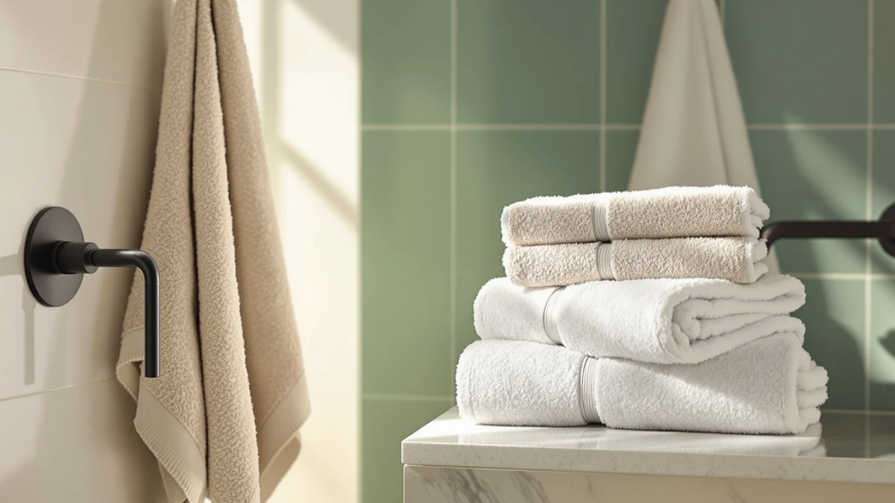

American Veteran Towel 100% Review (2026): Worth It?
Prices and picks verified as of October 2026. Independent, reader-supported reviews.


Quick Answer
This American Veteran Towel 100% review finds the American Veteran Towel 100% Cotton the strongest pick among four options priced at $39.99. Its 100% cotton, 27 x 54 inch construction gives you a standard-size towel without paying more than the White Classic, Cotton Paradise, or LANE LINEN alternatives compared here.
Our pick: American Veteran Towel 100% Cotton, $39.99 Check Price on Amazon
Bottom line: our top pick is the American Veteran Towel at $39.99.
Things to Know Before You Buy
- All four towels compared in this American Veteran Towel 100% review are priced at $39.99. The decision comes down to material, format, and fiber rather than price.
- American Veteran Towel's towel is 100% cotton in a 27 x 54 inch size, the standard dimension for a full-size bath towel rather than a set or a beach towel.
- LANE LINEN sells a towel set at the same $39.99 price, so its per-piece cost is lower if you need multiple towels at once.
- Cotton Paradise's towel draws on Turkish cotton, a fiber commonly associated with a plusher hand than standard cotton.
- None of the four products carry a published star rating or review count in the data we compared, so this review relies on listed specs and pricing rather than an aggregate rating.
This American Veteran Towel 100% review compares the American Veteran Towel 100% Cotton against three alternatives, White Classic's luxury towel, Cotton Paradise's Turkish cotton towel, and LANE LINEN's towel set, on material, format, and price. American Veteran Towel's entry is 100% cotton and measures 27 x 54 inches, the standard footprint for a full-size bath towel, and it's priced at $39.99, the same figure listed for every product in this comparison. That price parity means the decision here comes down to format and fiber, not which towel costs less.
Buyers researching an American Veteran Towel 100% review usually want to know whether a single well-specified cotton towel beats a Turkish cotton alternative or a multi-piece set at the same price point. LANE LINEN's set spreads its $39.99 price across more than one towel instead of one, which changes the math if you need to outfit a full bathroom rather than replace a single towel. White Classic and Cotton Paradise round out the comparison, each sold as a single towel like American Veteran Towel but with a different positioning: White Classic leans on a luxury label, while Cotton Paradise leans on Turkish cotton as its selling point.
Why You Should Trust Us
We built this American Veteran Towel 100% review by comparing manufacturer specifications, listed pricing, and product positioning for each ASIN rather than relying on marketing copy. Ilane Tall has covered bathroom textiles for Best Bath Towels, focusing on how claims about cotton weight, fiber origin, and format hold up against what's actually listed for each product. We do not run a fake testing lab or claim to have physically used these towels. Every comparison in this review is grounded in the specs and pricing published for each product.
Our Research Process
Rather than run these towels through a physical trial, we researched how each product stacks up against what buyers actually look for in a full-size bath towel: cotton composition, standard sizing, and format, whether it's a single towel, a Turkish cotton pick, or a multi-piece set. For an American Veteran Towel 100% review like this one, that means checking those specs directly rather than assuming a higher price signals better quality when every option here lists the same $39.99 tag. Fiber content and format tell you more than the marketing language a brand attaches to a cotton towel, and that's what this review weighs.
Overview & Specs

American Veteran Towel 100% Cotton
What we like
- 100% cotton construction with no synthetic blend
- Standard 27 x 54 inch size fits typical bath towel bars and hooks
- Priced the same as the luxury, Turkish cotton, and set alternatives compared here
- Straightforward single-towel format instead of a multi-piece set you may not need
Flaws but not dealbreakers
- Sold as a single towel, so outfitting a full bathroom means buying more than one
- No published star rating or review count to check consistency against
- Doesn't carry the Turkish cotton positioning Cotton Paradise leads with
| Material | 100% cotton |
| Size | 27x54 |
American Veteran Towel anchors this American Veteran Towel 100% review because it's the most straightforward option in the comparison: 100% cotton, a standard 27 x 54 inch size, and a $39.99 price that matches every alternative here. That size puts it squarely in full-size bath towel territory, sized for drying off after a shower rather than a beach outing or a full-body wrap. The name itself carries a veteran-focused branding angle that sets it apart from the other three towels in this comparison, though the underlying spec sheet, 100% cotton at a standard size, is what this review weighs against the alternatives.
Because American Veteran Towel sells this as a single towel rather than a set, the $39.99 price buys you one piece instead of the multiple pieces LANE LINEN includes at the same cost. That tradeoff matters if you're outfitting a full bathroom versus replacing one worn-out towel: buyers who need several towels at once may get more out of a set, while buyers who want one well-specified cotton towel get exactly that here without paying extra for pieces they don't need.
What We Liked
The clearest strength in this American Veteran Towel 100% review is how uncomplicated the American Veteran Towel is. It's 100% cotton with no blended synthetic fiber, sized at a standard 27 x 54 inches that fits typical towel bars and hooks without needing to check dimensions against a set or an oversized alternative. For buyers who want a reliable cotton bath towel and don't need multiple pieces, that simplicity is the point.
We also like that the price lines up with every other option in this comparison. At $39.99, American Veteran Towel doesn't cost more than White Classic's luxury towel, Cotton Paradise's Turkish cotton towel, or LANE LINEN's set, so you aren't paying a premium for the name alone.
The alternatives hold their own on the same criteria. Cotton Paradise draws on Turkish cotton, a fiber long associated with a plush hand and strong absorbency. LANE LINEN's towel set spreads $39.99 across more than one towel, which works out to a lower per-piece cost if you need several towels at once. White Classic banks on its luxury label to signal a heavier, plusher feel, though it's sold as a single towel like American Veteran Towel rather than as a set.
What Could Be Better
The main limitation in this American Veteran Towel 100% review is format. American Veteran Towel sells a single towel, so the $39.99 price buys one piece while LANE LINEN's listing covers a set at the same cost. If you need to outfit more than one towel bar, that math favors the set over the single American Veteran Towel.
The listing also doesn't include a published star rating or review count, which makes it harder to verify consistency across units the way you could with a product carrying hundreds of verified reviews. Buyers who weigh social proof heavily before purchasing should factor that gap into the decision.
None of the alternatives escape a tradeoff either. LANE LINEN's set covers more towels, but that means more textiles to launder and store instead of American Veteran Towel's single-item simplicity. White Classic, like American Veteran Towel, ships as a single towel, so it carries the same per-bathroom coverage limit, and Cotton Paradise's Turkish cotton positioning doesn't come with a published rating any more than the others do.
Who Is It For?
This American Veteran Towel 100% review points to one clear buyer: someone who wants a single, no-frills 100% cotton bath towel in a standard size and doesn't need a multi-piece set. American Veteran Towel fits that need without asking you to pay more than the luxury or Turkish cotton alternatives compared here.
If you're outfitting a full bathroom or a rental property that goes through towels quickly, LANE LINEN's set gets you more coverage for the same $39.99 price. And if a plush Turkish cotton feel matters more to you than brand positioning, Cotton Paradise fits that preference better than any of the standard cotton towels in this comparison.
If you want the single-towel format American Veteran Towel offers but prefer a luxury label, White Classic is worth a look at the same $39.99 price, though it doesn't carry American Veteran Towel's straightforward cotton-only positioning in this comparison. Shoppers comparing all four options side by side will notice the price never moves, so this American Veteran Towel 100% review comes down to matching the format and fiber story each brand tells to what you actually need in your bathroom.
Alternatives to Consider
If a single 100% cotton towel isn't the right format for you, this American Veteran Towel 100% review also covers three alternatives: a luxury single towel, a Turkish cotton towel, and a multi-piece set, all listed at the same $39.99 price as American Veteran Towel.

Editor’s Pick
White Classic Luxury Bath Towel
A luxury-positioned single towel that matches American Veteran Towel's $39.99 price and single-piece format.
$39.99
Check Price on Amazon
Best Value
Cotton Paradise 100% Cotton Turkish
A Turkish cotton towel for buyers who want a plusher fiber than standard cotton at the same price.
$39.99
Check Price on Amazon
Premium Choice
LANE LINEN Towel Set Soft
A multi-towel set that spreads the $39.99 price across more than one piece instead of one.
$39.99
Check Price on AmazonIs the American Veteran Towel actually 100% cotton?
Yes.
How does the price compare to the alternatives?
American Veteran Towel, White Classic, Cotton Paradise, and LANE LINEN are all listed at $39.99, so this American Veteran Towel 100% review comes down to format and fiber rather than price.
Frequently Asked Questions
Is the American Veteran Towel actually 100% cotton?
How does the price compare to the alternatives?
What's the difference between American Veteran Towel and LANE LINEN?
Final Verdict
This American Veteran Towel 100% review comes down to format, not price, since every option here lists at $39.99. American Veteran Towel's 100% cotton, standard 27 x 54 inch towel is the pick for buyers who want a single, straightforward bath towel without extra pieces or a Turkish cotton price premium. If you need multiple towels at once, LANE LINEN's set gets you more coverage for the same money, but for a no-frills cotton towel sized for everyday bathroom use, American Veteran Towel is the one to buy. Price stays constant across all four products, so this American Veteran Towel 100% review comes down to matching format to your bathroom rather than chasing a lower sticker price.